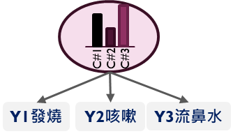

觀察指標
第 i 人的反應向量為 yi = (yi1, …, yiJ)。二元題 yij ∈ {0, 1}。本教材以 1 表示有該反應。
Latent Class Analysis
從類別反應辨識群體差異，練習解讀類別比例、條件反應機率與個人的後驗類別機率。
潛在類別分析（LCA）用一個未觀察到的類別變數 C 解釋多個類別指標的聯合分配。以下先建立二元指標模型，再由反應型態推算類別成員機率。

第 i 人的反應向量為 yi = (yi1, …, yiJ)。二元題 yij ∈ {0, 1}。本教材以 1 表示有該反應。
πk = P(C = k)，k = 1, …, K。πk ≥ 0，且 Σk πk = 1。模型估計 K − 1 個獨立的類別比例。
θjk = P(Yj = 1 | C = k)。相對地，P(Yj = 0 | C = k) = 1 − θjk。同一類的 J 個 θ 值組成類別剖面。
局部獨立假設給定類別 C 後，各指標的聯合機率可拆成題目機率的乘積。若忽略 C，指標仍可因類別組成不同而相關。
Oi 是第 i 人有作答的題目集合。在可忽略缺失機制的觀察資料概似中，未觀察的題目從乘積略過。若題目有多個反應類別，將每題因子換成 θjkr = P(Yj = r | C = k)，同一題同一類的各反應機率加總為 1。
以病患三題皆回答「有」為例，第 2 類的分子是 .53498 × .947 × .804 × .843 ≈ .34338。將它除以三類分子的總和，得到約 96.2% 的後驗機率。可在下方範例重做。τik 也可用來估計各類人數，將每人歸入最大 τ 的類別則是另一種摘要。
若第 i 列為一種反應型態，wi 是出現次數。逐筆資料則令 wi = 1。最大化的觀察資料對數概似為
E 步使用目前的 π 與 θ 計算 τik。M 步用 τik 當作分配至第 k 類的權重，更新兩組參數：
交替更新至對數概似的變化足夠小。使用多組隨機起始值，比對最佳概似能否重現，並檢查接近 0 或 1 的反應機率與極小類別。不同起始值也可能交換類別編號，比較軟體結果時可依類別剖面配對。
對二元題，Mplus 採用 logit 連結時，閾值 tjk 決定第 k 類在第 j 題的兩種作答機率：
以第 K 類為參照時，類別截距 γk 可轉換成類別比例：
也可直接讀 Results in Probability Scale 的 Category 2 與 Based on the Estimated Model 的類別比例。
無限制的 K 類、J 個二元題模型需要 q = (K − 1) + KJ 個自由參數；完整反應表最多有 2J − 1 個獨立機率。病患範例 J = 3、K = 3，11 個參數超過 7 個獨立機率，說明只看到程式收斂仍不足以判定模型已識別。
在相同樣本、指標與編碼下比較不同 K。資訊準則越小越有利，並應檢查最佳概似重現、類別大小與剖面可解釋性。有可用的調整後 LMR 或 BLRT 時，連同檢定診斷一起解讀。
N = Σi wi，且 0 log(0) 視為 0。Entropy 越接近 1，表示後驗機率越集中，適合用於判讀分類清晰度。適配與選模另用前述資訊準則與診斷。
切換觀察值，看看哪些題目改變最可能類別。未觀察的題目會略過。
讀取各類的 P(Yj = 1 | C = k)，並比較指標之間的高低。下表的 1 對應 Mplus 機率表的 Category 2。
左側選擇案例與類別數，右側會顯示使用相同資料的三種語法。R 使用 base R，Python 使用標準函式庫。
將程式與資料放在同一資料夾，依下載區的說明執行。用同一組指標與類別數比較結果，對照時先依剖面配對類別編號。
使用對應的反應型態資料檔，執行三類病患或五類 TCS 模擬練習。
以 base R 執行多起始值的 EM，輸出對數概似、資訊準則與各類條件反應機率。
以 Python 標準函式庫執行相同的二元 LCA，輸出類別比例與反應機率。